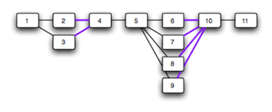

Every time any change is introduced - application, database script, automated test, infrastructure, deployment script, configuration, etc. - the change should kick off a gauntlet of validation. The quicker you can find out if a change breaks something the better off you are and the more confidence you will have in your software. We tell the teams who want to go faster that they need to fail fast. We built GoCD to give teams the power to model and remodel a Build-Test- Release workflow so that they get super quick feedback on every change. And if something breaks, great, find it fast, fix it fast, and then run the new version through the gauntlet.
A common workflow to fail fast
Here's a generic but common Build-Test-Release workflow. Each code commit will trigger a new release candidate and run through the gauntlet, left to right. Every workflow step is tasked to find an issue with the version of the software it is building, testing or deploying.

To shorten the feedback loop:
- The activities within each workflow step can run in parallel.
- The workflow steps are sequenced to run the most important things first.
- Four build pipelines can run in parallel.
- Four acceptance test pipelines can run in parallel.
- Six different test environments can run in parallel.
Know what's going on in a workflow
It's important a team has a holistic context for every release candidate. Every tool talks about "visibility" and "traceability". A tool that can easily answer these questions provides visibility and traceability:
- Which dependency or commit broke the build?
- Who broke the build?
- What's the difference between these 2 builds?
- Which features and bug fixes are in this release candidate?
- Which version of our software is running in this environment?
- Who deployed in this environment and when?
How will modeling a workflow help a team fail fast?
Let's say a release candidate needs to pass 11 steps (gauntlet) before it can make it to an enduser. Sequence is important. The goal is to fail fast. A flat workflow will return feedback but it's slow since only one step will run at a time.

If it turns out that a few steps can be run in parallel, you will speed up your workflow.

Speed things up even further by increasing the amount of parallelization.

Over time you may find other areas in your Build-Test-Release workflow where you can speed up your feedback loop. This workflow will find an issue much faster than the flat one we started with.

Sequencing and parallelization in GoCD
A GoCD pipeline is a building block (*). Teams using GoCD will come together and model an end-to-end Build-Test-Release workflow by chaining pipelines together. Part of this collaboration is figuring out the sequence of workflow steps and where parallelization makes sense.
Sequencing workflow steps will define priority:
- Execute the most important activities first:
- Automated acceptance tests before performance tests.
- Execute the shortest activities first:
- Unit tests before smoke tests.
- Smoke tests before automated acceptance tests
Parallelization will speed things up:
- Parallelize activities within a workflow step:
- Speed up an acceptance test suite.
- Parallelize different workflow steps:
- Run acceptance tests, performance tests and exploratory testing at the same time.
We treat a workflow as a single entity
It's extremely important to us that the core behavior of a single pipeline is maintained in a workflow (chain of pipelines), no matter the model. GoCD allows teams to model as they wish and handles stuff like artifact management and if a release candidate should advance to the next step. A lot of the intelligence comes down to how GoCD manages dependencies. We're proud of this intelligence, especially the "fan-in" support. This is where GoCD really shines.
(*) Jez Humble and David Farley talk about a "deployment pipeline" in their book, Continuous Delivery. A core domain concept in GoCD is called a "pipeline". They are not the same thing.
-
The book talks about the "deployment pipeline" in a holistic sense, a pattern that can be implemented to model your path to production. They summarize a deployment pipeline as "in essence, an automated implementation of your application's build, deploy, test, and release process".
-
GoCD is a Continuous Delivery tool that allows teams to implement that pattern via GoCD pipelines. A GoCD pipeline is a building block. GoCD pipelines are a way to implement a deployment pipeline. The product overloads the term. On behalf of Jez, sorry!